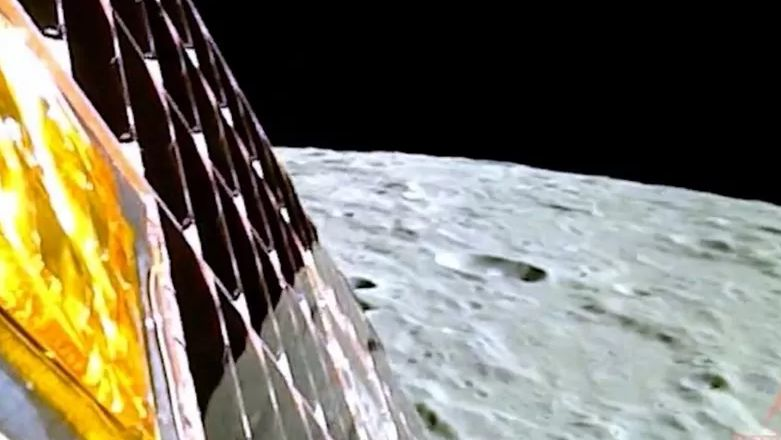

Noticias

Noticia 1
El telescopio SuperBIT, lanzado por la NASA en un globo científico el 16 de abril, ha tomado sus primeras imágenes de investigación de las galaxias de la Nebulosa de la Tarántula y las galaxias Antena.
Noticia 2
La nave espacial RHESSI de la NASA se desintegró en la atmósfera sobre el desierto del Sáhara, tras casi 21 años desde su lanzamiento. Durante su tiempo en órbita, RHESSI observó erupciones solares, proporcionando conocimientos sobre su física.


Noticia 3
La nave espacial RHESSI de la NASA se desintegró en la atmósfera sobre el desierto del Sáhara, tras casi 21 años desde su lanzamiento. Durante su tiempo en órbita, RHESSI observó erupciones solares, proporcionando conocimientos sobre su física.